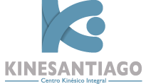

Reservar horaDespués de evaluarte, adaptan la atención para resolver tus dificultades físicas y nutricionales y mejorar tu calidad de vida.
Reservar por WhatsAppEn 1996 el kinesiólogo Roberto Vásquez Urbano, con 10 años de experiencia en instituciones como ACHS, Teletón y Clínica Las Condes, decidió abrir junto a su esposa una consulta de rehabilitación en el centro de Santiago.
Por más de 20 años rehabilitaron a más de 7 mil pacientes, que valoran su calidad humana, experiencia y profesionalismo.
Procedimientos para el bienestar general, con un equipo multidisciplinario, enfocados principalmente en kinesiología y con equipamiento de última tecnología.
Tratamiento de patologías músculo-esqueléticas, agudas o crónicas, con atención personalizada para rehabilitar en el menor tiempo posible, disminuir el dolor y prevenir futuras patologías. Incluye masoterapia: técnicas manuales para rehabilitar lesiones, relajar y mejorar el sueño.
Valoración postural y biomecánica en posición estática y dinámica, con plataforma baropodométrica y escáner 2D y 3D, para un diagnóstico preciso y plantillas de polipropileno a la medida.
Evaluación con balanza de impedancia (peso, IMC, % de grasa y de músculo, grasa visceral, edad corporal y metabolismo basal) en menos de 2 minutos, sin procedimientos invasivos. Plan de alimentación equilibrado y controles presenciales u online.
Limpieza no invasiva profunda con cabezal giratorio: remueve células muertas, limpia poros, revitaliza e hidrata. Luego, galvánica con geles de alta calidad para disminuir líneas de expresión.
Además de la rehabilitación con ultratermia, ultrasonido, presoterapia y electroestimulación, representan equipos de marcas reconocidas, para profesionales y para usar en casa, con asesoría sobre su correcto uso.
“Soy oficinista y futbolista amateur, y en manos de estos profesionales las lesiones pasan a segundo plano.”Paciente, ingeniero comercial
“Es muy buena la atención. Son dedicados con su trabajo y se nota la pasión que sienten por lo que hacen.”Paciente de KineSantiago
“Tiene un concepto de trabajo distinto, enfocado en la recuperación funcional en todos los ámbitos.”Paciente, ultramaratonista y montañista
WhatsApp +56 9 6658 2160 · Huérfanos 1147, of. 648, Santiago
contacto@kinesantiago.cl